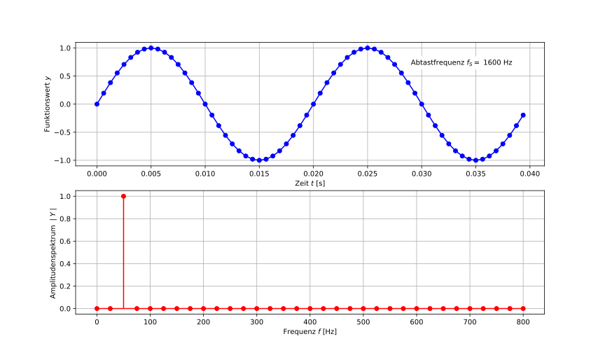

Frequenzanalyse#
Die Frequenzanalyse ist ein sehr wichtiges Werkzeug in der Signalverarbeitung/Messtechnik, mit dem untersucht werden kann, welche Frequenzanteile wie stark in einem Signal vertreten sind. Die Fouriertransformation bildet dabei das Kernstück. Diese werden wir im Folgenden schrittweise kennenlernen, wobei zum einen das theoretische Hintergrundwissen und zum andern die praktische Anwendung relevant sein werden. Für die Umsetzung in Python werden wir das Paket SciPy verwenden, welches bereits bekannt ist.
Blockinhalt#
Für die Einführung in die Frequenzanalyse/Fouriertransformation bzw. die selbstständige Einarbeitung stehen die folgenden Notebooks bereit:
Einführung/Theorie/Cheat Sheet (vorliegendes Notebook)
Beispielaufgabe im Unterricht 02_FFT_Unterricht.ipynb
Übersicht FFT-Workflow 03_FFT_Workflow.ipynb
Übungsaufgaben 11_FFT_Uebungen.ipynb
Voraussetzungen#
Wir werden die theoretischen Grundlagen der Fourierreihe bzw. -tranformation relativ zügig durchgehen, da die praktische Umsetzung im Vordergrund steht. Da Kosinus- bzw. Sinusschwingungen die Grundlage der Fouriertransformation darstellen, wird die Darstellung einer Kosinus- bzw. Sinusschwingung im Zeitbereich, z. B. in der Form \(y(t) = \hat y\cdot\cos(\omega t + \varphi)\) bzw. \(y(t) = \hat y\cdot\sin(\omega t + \varphi)\) als bekannt vorausgesetzt. Die Begriffe Amplitude, Frequenz bzw. Kreisfrequenz sowie Phasenverschiebung sollten klar sein.
Sie sollten sich im Klaren sein, dass sich die Sinus- und die Kosinusfunktion nur durch eine Phasenverschiebung unterscheiden. Im Weiteren sollte bekannt sein, dass im Zusammenhang mit Schwingungen die Kreisfrequenz \(\omega\) [rad/s] alternativ zur “normalen” Frequenz \(f\) [Hz] verwendet werden kann und die beiden folgendermassen zusammenhängen:
1. Motivation#
In vielen technischen Problemstellungen treten Signale auf, welche unterschiedliche Frequenzanteile enthalten und bei der Analyse geht es u. a. um die Frage, welche Frequenzanteile wie stark ausgeprägt sind (Frequenzanalyse, auch Fourieranalyse oder harmonische Analyse genannt). In der Technik ist die Frequenzanalyse in unzähligen Gebieten anzutreffen, wobei für uns die Messtechnik im Vordergrund steht.
Messtechnik (Schwingungen, akustische bzw. optische/bildgebende Verfahren)
Datenkompression (Ton, Bild, Video etc.)
Signalverarbeitung (Filterung, …)
Mathematik/Physik (Lösen von bestimmten Problemen)
…
2. Grundlagen#
2.1 Fourierreihe#
Gemäss Fourier kann jede beliebige periodische Funktion \(y(t)\), im Folgenden Signal oder Zeitsignal genannt, als Summe von unendlich vielen Sinus- und Kosinusschwingungen repräsentiert werden (Fourierreihe). Wie wir später sehen werden, besteht das Ziel der Fouriertransformation im Wesentlichen darin, die Koeffizienten (Amplituden und Phasen) der einzelnen Schwingungen zu bestimmen, d. h. zu ermitteln wie ausgeprägt bestimmte Frequenzanteile auftreten.
Fouriereihe in Sinus-Kosinus-Form#
Fouriereihe in Amplituden-Phasen-Form#
Da die Sinusfunktion lediglich eine verschobene Kosinusfunktion ist, kann die obige Beziehung auch kompakter mit Amplitude \(A\) und Phasenverschiebung \(\varphi\) geschrieben werden.
Dabei zeigt sich schön, worin letzlich das Ziel der Fouriertransformation besteht.
Bestimmen der Amplituden \(A\) für die versch. Frequenzen im Signal \(\,\to\,\) Amplitudenspektrum
Bestimmen der Phasenverschiebungen \(\varphi\) für die versch. Frequenzen im Signal \(\,\to\,\) Phasenspektrum
Amplituden- und Phasenspektrum werden zusammengenommen Frequenzspektrum genannt, wobei für uns i. Allg. nur das Amplitudenspektrum relevant ist. Die folgende Animation zeigt das Prinzip der Fourierreihe und des Frequenzspektrums sehr anschaulich.
Abb.: Fouriertransformation und Frequenzbereich [Quelle]
![[Quelle]](https://en.wikipedia.org/wiki/File:Fourier_transform_time_and_frequency_domains.gif){kind=link}
Fouriereihe in Exponentialform#
Die kompakteste Form hat die Exponentialform. Mithilfe der Eulerschen Formel \(e^{j \omega t} = \cos(\omega t) + j \cdot \sin(\omega t)\) kann die Fourier-Reihe kompakt mit der komplexen Exponentialfunktion geschrieben werden. Die Koeffizienten \(Y_k\) stellen dabei die komplexen Amplituden dar und sind die gesuchten Fourierkoeffizienten.
Es ist üblich, die Fouriertransformierte eines Signals mit dem entsprechenden Grossbuchstaben des Zeitsignals zu bezeichnen. Wir bezeichnen das Zeitsignal in der Regel mit
yund dementsprechend die Transformierte mitY. Der Betrag (Amplitude) der komplexen GrösseYwird mathematisch mit \(|Y|\) geschrieben, in Python verwenden wir als Variablenname dafürA(für Amplitude).
2.2 Diskrete Fouriertransformation (DFT)#
Wie oben angedeutet wird ein Signal aus dem Zeitbereich mithilfe der Fouriertransformation in den Frequenzbereich (auch Bildbereich genannt) transformiert. Konkret bedeutet dies, die entsprechenden Fourierkoeffizienten zu berechnen. Wenn dies numerisch für ein zeitdiskretes (abgetastetes) Signal gemacht wird, spricht man von der diskreten Fouriertransformation (DFT). Die Fourierkoeffizienten \(Y_k\) sind komplex und beinhalten die Amplitudeninformationen (Betrag) und Phaseninformationen (Winkel).
2.3 FFT-Algorithmus#
Die Berechnung gemäss obiger Beziehung erfordert für lange und hochaufgelöste Zeitsignale einen erheblichen Rechenaufwand. Erst die Entwicklung des FFT-Algorithmus ermöglichte die effiziente Berechnung der diskreten Fourier-Transformation (DFT) und somit den breiten Einsatz in technischen Anwendungen.
2.3.1 SciPy-Implementierung (scipy.fft)#
SciPy stellt das Modul fft zur Verfügung, welches Funktionen zur Berechnung der Fouriertransformation enthält. Im Wesentlichen ist das die Funktion fft(), doch es gibt eine Reihe verwandter Funktionen, von denen wir einige verwenden werden. Die Funktion fft() ist für beliebige (auch komplexe) Signale definiert und liefert auch Frequenzanteile für negative Frequenzen zurück. Für reelle Zeitsignale (mit denen wir es zu tun haben), ist das Frequenzspektrum immer symmetrisch, d.h. die Frequenzanteile der negativen Frequenzen sind immer identisch mit denjenigen der positiven Frequenzen und beinhalten daher keine zusätzlichen Informationen. Wir können diese negative Frequenzachse also problemlos ignorieren (hat physikalisch keine Bedeutung). Deshalb werden wir anstelle der allgemeinen Funktion fft() stets die speziell für reelle Signale geeignete Funktion rfft() verwenden (und für die Erzeugung der Frequenzachse die Funktion rfftfreq()).
3. Praktische Umsetzung#
Die Berechnung des Frequenzspektrums (= Amplituden- und Phasenspektrums) mithilfe des FFT-Algorithmus ist dank der oben erwähnten SciPy-Implementierung sehr einfach, doch es gibt einige wichtige Aspekte, die beachtet werden müssen:
→ 3.1 Frequenzauflösung und max. Frequenz
→ 3.2 Periodizität bzw. Fensterfunktionen
→ 3.3 Sampleanzahl
→ 3.4 Aliasing bzw. Abtasttheorem
3.1 Frequenzauflösung und maximale Frequenz#
Die nachfolgende Abbildung zeigt ein mit 1600 Hz abgetastetes Signal, wobei es sich um eine 50 Hz-Schwingung handelt. Darunter ist das entsprechende Amplitudenspektrum dargestellt, welches erwartungsgemäss einen Peak bei 50 Hz aufweist (alle anderen Frequenzen haben keinen Anteil, da es sich beim Signal um eine reine 50 Hz-Schwingung handelt). Die Höhe des Peaks (Amplitude) entspricht der Schwingungsamplitude im Zeitsignal (\(= 1\)).

Abb.: Zeitsignal (oben) und Amplitudenspektrum (unten) einer 50 Hz-Schwingung
Anhand der obigen Abbildung können an dieser Stelle folgende Zusammenhänge erkannt werden:
Die Frequenzauflösung \(\Delta f\) im Spektrum entspricht 25 Hz, was gerade dem Kehrwert der Dauer der Messung \(t_{meas} =\) 0.04 s entspricht. Dies ist intuitiv verständlich, denn die “langsamste” Schwingung, die in einem Zeitfenster von 0.04 s detektiert werden kann, entspricht einer 25 Hz-Schwingung. Für eine hohe Auflösung im Frequenzbereich ist also eine lange Messdauer nötig. Die Frequenzauflösung ist gleichbedeutend mit der kleinsten Frequenz \(f_{min}\), welche im Spektrum angezeigt wird (abgesehen vom Gleichanteil bei 0 Hz). Da sich die Messdauer mit \(t_{meas} = N \cdot 1/f_S\) ausdrücken lässt, kann die Frequenzauflösung auch mit \(f_S / N\) berechnet werden.
\[ \Delta f = f_{min} = \frac{1}{t_{meas}} = \frac{f_S}{N}\]Die maximale Frequenz im Spektrum entspricht \(f_{max} =\) 800 Hz, was gerade der Hälfte der Abtastfrequenz \(f_S =\) 1600 Hz entspricht. Dies ist ebenfalls recht anschaulich erklärbar. Um eine Sinusschwingung überhaupt noch als Schwingung detektieren zu können, braucht es mind. 2 Abtastpunkte pro Periode, d. h. im vorliegenden Fall kann mit einer Abtastrate von 1600 Hz höchstens eine 800 Hz-Schwingung erkannt werden. Die maximale Frequenz im Spektrum \(f_{max}\) wird auch Nyquist-Frequenz genannt (vgl. Abtasttheorem).
\[ f_{max} = \frac{f_S}{2} \]
Die relevanten Grössen im Frequenzbereich (\(f_S\), \(\Delta f\), \(f_{max}\)) hängen direkt mit den Grössen im Zeitbereich (\(\Delta t\), \(t_{meas}\)) zusammen.
3.2 Periodizität bzw. Fensterfunktionen#
Im obigen Beispiel entspricht die Dauer der “Messung” genau einem Vielfachen der Periodendauer der Schwingung, d. h. das Signal ist exakt periodisch im betrachteten “Fenster” (gedanklich kann der Anfang des Signals wieder ans Ende “angeschlossen” werden, ohne dass ein Sprung bzw. eine Unstetigkeit entsteht). Nachfolgend ist das gleiche Signal wie oben dargestellt, dabei wurde nun aber etwas länger gemessen (\(t_{meas} =\) 0.05 s), d. h. die Messzeit entspricht nicht mehr genau einem Vielfachen der Periodendauer der Schwingung.

Abb.: Messzeit entspricht nicht genau einem Vielfachen der Schwingungsperiode
Auffällig ist dabei folgendes:
Obwohl es sich um die genau gleiche, reine 50 Hz-Schwingung wie in der ersten Abbildung handelt, treten nun im Spektrum auch Anteile anderer Frequenzen auf.
Die Erklärung dafür liegt darin begründet, dass die Fouriertransformation von periodischen Signalen ausgeht und diese Voraussetzung hier offensichtlich verletzt wurde. Denkt man sich das obige Signal periodisch weiter, so resultiert das nachfolgend abgebildete Zeitsignal und es ist ersichtlich, dass nun “Sprünge” auftreten, welche das Amplitudenspektrum “verfälschen”. Die Sprünge führen zu zusätzlichen (unphysikalischen) Frequenzanteilen und “verschmieren” das Spektrum. Dieser Effekt wird auch Leck-Effekt bzw. Spectral Leakage genannt.
Abb.: "Gedankliche" periodische Verlängerung des Zeitsignals führt zu Sprüngen an den Übergangsstellen
Wie könnte dieses Problem nun behoben werden? Eine Möglichkeit, die sich in der Praxis etabliert hat, besteht darin, sogenannte Fensterfunktionen zu verwenden, mit denen das Zeitsignal vor der Fouriertransformation dahingehend verändert wird, dass solche Sprünge nicht oder nicht mehr so ausgeprägt auftreten. Man kann sich das so vorstellen, dass das Signal am Anfang und am Ende “langsam auf 0 runtergezogen wird”, sodass ein glatter Übergang zwischen Ende und Anfang erreicht wird bei der periodischen Wiederholung.
In nachfolgender Abbildung sind typische Fensterfunktionen dargestellt, wobei alle gemeinsam haben, dass sie am Anfang und am Ende gegen 0 oder einen kleinen Wert streben, womit das oben beschriebene Problem entschärft wird. Diese Fensterfunktion sind unter signal.windows in SciPy oder einige bekannte auch in NumPy verfügbar.
Abb.: Typische Fensterfunktionen
Die Anwendung der Fensterfunktion ist denkbar einfach. Das Messignal wird elementweise mit der (gleichlangen) Fensterfunktion multipliziert und geht so am Anfang und am Ende gegen 0.
Der Gleichanteil (Offset) des Signals muss für die Multiplikation mit der Fensterfunktion entfernt und danach wieder hinzugefügt werden.
In nachfolgender Abbildung ist nochmals das “gedanklich” periodisch wiederholte Signal dargestellt, nun wurde es aber mit der Tukey-Fensterfunktion konditioniert. Man erkennt, dass nun keine Sprünge zwischen den periodischen Wiederholungen auftreten, da das Signal an diesen Stellen jeweils 0 ist.
Da wir in diesem Beispiel lediglich ca. 2 Perioden der Schwingung erfassen, wird das Signal durch die Fensterfunktion stark verändert. In der Praxis bzw. einem “realen” Signal ist die Messzeit im Vergleich zur Periodendauer der Schwingung(en) in der Regel sehr gross und dieser Effekt daher vernachlässigbar.
Abb.: Periodische Verlängerung des Zeitsignals mit Fensterung, d.h. es treten keine Sprünge mehr auf
Betrachten wir nun das Amplitudenspektrum des mit der Fensterfunktion vorkonditionierten Signals verschwinden die unphysikalischen hohen Frequenzen weitgehend aus dem Spektrum (vgl. Anmerkung oben).
Abb.: Amplitudenspektrum mit/ohne Fensterfunktion
3.3 Sampleanzahl#
Die Berechnung des Frequenzspektrums ist für lange Messungen, welche mit einer hohen Abtastfrequenz abgetastet wurden (also aus sehr vielen Samples bestehen), sehr aufwändig und der FFT-Algorithmus nutzt spezielle Eigenschaften (Symmetrien etc.) des Frequenzsprektrums aus um die Berechnung möglichst effizient zu machen. Am effizientesten ist der Algorithmus, wenn die Sampleanzahl \(N\) einer 2er-Potenz entspricht (also z. B. \(2^{16}\) usw.). Da Messungen in der Praxis in der Regel nicht genau eine solche Anzahl Samples aufweisen, gibt es versch. Möglichkeiten:
Die meisten mordernen FFT-Implementierungen (z. B. SciPy, NumPy, etc.) können relativ problemlos mit einer “unpassenden” Sampleanzahl umgehen. Allenfalls dauert die Berechnung etwas länger, doch das ist bei Berechnungen auf einem modernen Computer etc. meistens nicht problematisch. Bei Realtime-Berechnungen auf leistungsschwachen Geräten (Microcontrollern etc.) wird die Sampleanzahl allerdings idealerweise günstig gewählt.
Die FFT-Funktion in SciPy hat einen zweiten Parameter (
n), mit dem man steuern kann, wieviele Samples für die FFT-Berechnung verwendet werden. Istnkleiner als die Samplanzahl des Signals, so werden nurnSamples verwendet und die übrigen ignoriert (Cropping). Istngrösser als die Sampleanzahl des Signals, so wird das Signal mit 0 aufgefüllt (Zero Padding). Dies hat einen geringfügigen Einfluss auf das Spektrum, doch dieser ist in vielen praktischen Anwendungen unerheblich. Nachfolgend ist das Spektrum einer verrauschten Sinusschwingung dargestellt, wobei einmal die ursprüngliche (ungünstige) Sampleanzahl \(N\) und dann die nächstkleinere bzw. nächstgrössere 2er-Potenz als Sampleanzahl verwendet wurde. Darunter sind die Rechenzeiten der FFT angegeben und man erkennt, dass die ungünstige Sampleanzahl eine 5..10 x längere Rechenzeit aufweist. (Für uns ist dies jedoch im Allgemeinen unerheblich, d. h. wir werden üblicherweise die effektive Sampleanzahl der Messung verwenden.)
Abb.: Einfluss der verwendeten Sampleanzahl auf das Amplitudenspektrum
Sampleanzahl \(N\) |
Zeitbedarf FFT [ms] |
|---|---|
3839573 |
1131 |
\(2^{21}\) = 2097152 (Cropping) |
98 |
\(2^{22}\) = 4194304 (Padding) |
293 |
Eine weitere Möglichkeit besteht darin, dass Signal zu “resamplen”, d. h. das Signal an andern Stützstellen abzutasten, um so eine günstige Sampleanzahl zu erreichen. Dies kann sehr einfach z. B. mittels Interpolation (vgl.
interp()aus NumPy) erfolgen.
Abb.: Interpoliertes Zeitsignal, um eine günstige Sampleanzahl zu erreichen
3.4 Abtasttheorem#
Wir haben oben gesehen, dass die maximale Frequenz \(f_{max}\) im Spektrum der halben Abtastfrequenz \(f_S\) entspricht. Dies bedeutet, dass Schwingungen bis zu dieser Frequenz vollständig aus dem abgetasteten Signal rekonstruiert werden können. Dies ist ein grundlegendes Theorem der Informationstheorie und wird Nyquist-Shannon-Abtasttheorem (oder kurz einfach Abtasttheorem) genannt. Es besagt, dass ein Signal mit einer Abtastfrequenz abgetastet werden muss, die mindestens doppelt so gross ist wie die höchste im Signal auftretende Frequenz.
Die Verletzung des Abtasttheorems kann zu einer kompletten Verfälschung des Spektrums führen, da “scheinbare” Frequenzanteile erzeugt werden, die aber nicht im Signal enthalten sind. An einem Beispiel soll gezeigt werden, was passiert, wenn ein Signal mit einer zu geringen Abtastfrequenz abgetastet wird. In nachfolgender Abbildung wird eine 25 Hz-Schwingung (blau) mit einer zu kleinen Abtastfrequenz von \(f_S =\) 30 Hz erfasst, womit das Abtasttheorem verletzt wird (30 Hz \(\ngtr\) 2 \(\cdot\) 25 Hz). Wird vom erfassten Signal nun das Frequenzspektrum erstellt, erscheint dort ein Peak bei 5 Hz, obwohl im Signal weit und breit keine 5 Hz-Schwingung vorhanden ist. Zum Vergleich ist zusätzlich der korrekte Peak bei 25 Hz eingetragen (blau), der mit korrekter Abtastung erkannt worden wäre. Dieses Phänomen wird als Aliasing bezeichnet und betrifft sämtliche Abtastvorgänge.
Abb.: Abtastung mit zu kleiner Abtastfrequenz (rote Kurve) führt zu unphysikalischen Frequenzanteilen (Aliasing)
Man muss sich im Klaren sein, dass im obigen Diagramm für Vergleichszwecke das “korrekte” Signal in blau eingetragen ist. Dieses würde man bei einer realen Messung mit der zu tiefen Abtastfrequenz aber eben genau nicht erkennen, sondern nur das rote (“falsche”) Signal und es gäbe im Nachhinein keine Möglichkeit, dieses Problem zu erkennen bzw. zu korrigieren. Die Einhaltung des Abtasttheorems ist daher extrem wichtig!
Zum Beispiel tritt dieses Phänomen häufig in Videos auf, wenn eine Bewegung gefilmt wird, die “schneller” ist, als es die Abtastung (zeitliche Auflösung) erfassen kann. Die Bewegung scheint dann z. T. viel zu langsam oder sogar in die “verkehrte” Richtung abzulaufen (“Rad dreht rückwärts” etc.). Es scheint dann eine “Frequenz” zu geben, die in Wirklichkeit natürlich nicht vorkommt.
Abb.: Aliasing-Effekt in Video [Quelle]
Angewandte Mathematik | MAT_AGW | 2024